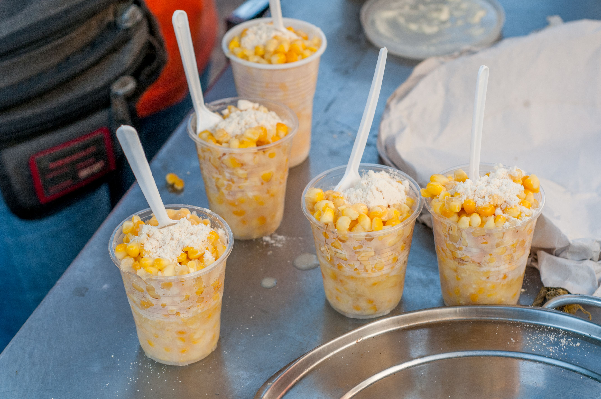

Home
Elote

A photo of elote by Wilfredor
Description
Enjoy this quick and yummy traditional Mexican street food!
Ingredients
- 2 (15.5 ounce) cans whole kernel corn, drained
- 4 tablespoons mayonnaise, or to taste
- 4 tablespoons grated Parmesan cheese, or to taste
- 4 teaspoons chile-lime seasoning (such as Tajin®), or more to taste
- 1 lime, or more to taste
Steps
- Heat corn in a skillet over medium heat until steaming, about 5 minutes. Remove from heat and drain water.
- Fill several cups or mugs halfway with the corn. Add 1 tablespoon mayonnaise, 1 tablespoon Parmesan cheese, and 1 to 2 teaspoons chile-lime seasoning to each cup. Squeeze lime juice on top.
Recipe by Kelsie on Allrecipes
Home